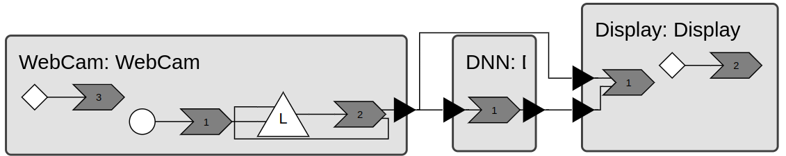

Object Detection with YOLO
YOLO11 is a popular image detection framework for Python. In this tutorial, you will see how we can implement an object detection flow using xronos.
Clone the YOLO example and install dependencies
Begin by cloning the xronos repository and navigating to the YOLO example.
$ git clone https://github.com/xronos-inc/xronos
$ cd xronos/examples/YOLO
Set up a virtual environment and install xronos, see Installation instructions.
Install the dependencies of the YOLOv11 example.
$ apt-get install libgl1
$ pip install -r requirements.txt
Overview
Familiarize yourself with the main program in YOLO.py. After parsing some
command line arguments, the main() function assembles the reactor program.
def main(
video_path: Optional[str] = None,
no_display: bool = False,
trace: bool = False,
) -> None:
env = xronos.Environment()
webCam = env.create_reactor(
"WebCam", WebCam, frames_per_second=10, video_stream_path=video_path
)
dnn = env.create_reactor("DNN", DNN, model_path="yolo11n.pt")
display = env.create_reactor("Display", Display, no_display=no_display)
env.connect(webCam.frame, display.frame)
env.connect(webCam.frame, dnn.frame)
env.connect(dnn.result, display.dnn_result)
if trace:
print("enable tracing")
env.enable_tracing()
env.execute()
This creates the following reactor program.

In the following we will go through each of the three reactors.
WebCam reactor
Open WebCam.py. The WebCam reactor declares two reactor elements, using an InternalEventDeclaration called
_sample_webcam and an OutputPortDeclaration called frame. Internal events are objects on which the program
can schedule future events. Unlike timers, where the timestamps of the events are periodic, internal events can be
scheduled at arbitrary timestamps and are, as such, more expressive than timers. It is called internal because the
events are scheduled from within the program. Reactors communicate by exchanging events via ports. In this case,
WebCam can send events containing cv2 matrices.
class WebCam(xronos.Reactor):
_sample_webcam = xronos.InternalEventDeclaration[None]()
frame = xronos.OutputPortDeclaration[cv2.typing.MatLike]()
The __init__ method defines the sample_period attribute and opens a VideoCapture
stream using cv2.
def __init__(
self, frames_per_second: int, video_stream_path: str | None = None
) -> None:
super().__init__()
self.sample_period = datetime.timedelta(seconds=1.0 / frames_per_second)
print(self.sample_period)
if video_stream_path is not None:
self.stream = cv2.VideoCapture(video_stream_path)
else:
self.stream = cv2.VideoCapture(0, cv2.CAP_ANY)
if not self.stream.isOpened():
print("ERROR: Could not open VideoCapture stream")
sys.exit(1)
self.stream.set(cv2.CAP_PROP_FPS, frames_per_second)
The reactor contains three reactions. on_startup is triggered by
startup. The startup reaction uses
add_effect() to declare an effect on the
internal event _sample_webcam. This allows the reaction handler to schedule
the first occurrence of _sample_webcam event. Instead of invoking
schedule() directly, the reaction handler uses the
convenience function reschedule_sample_webcam to schedule the first event. We
will explain this function in more detail later.
@xronos.reaction
def on_startup(self, interface: xronos.ReactionInterface) -> Callable[[], None]:
interface.add_trigger(self.startup)
sample_webcam_effect = interface.add_effect(self._sample_webcam)
def handler() -> None:
self.reschedule_sample_webcam(sample_webcam_effect)
return handler
The on_sample_webcam reaction is triggered by the _sample_webcam event and may have
an effect on the fame output port. The main task of the handler is to read a
frame from the camera and to forward this frame to the next reactor using the
frame output port. A value is written to a port by calling set()
on the declared port effect. If no frame could be read, the
handler stops the program using request_shutdown().
Finally, the handler uses reschedule_sample_webcam to schedule the next
occurrence of _sample_webcam, so that the reaction will be triggered again in
the future.
@xronos.reaction
def on_sample_webcam(
self, interface: xronos.ReactionInterface
) -> Callable[[], None]:
interface.add_trigger(self._sample_webcam)
sample_webcam_effect = interface.add_effect(self._sample_webcam)
frame_effect = interface.add_effect(self.frame)
def handler() -> None:
ret, _frame = self.stream.read()
if ret:
frame_effect.set(_frame)
else:
print("WARNING: Failed to read frames from videostream. Shutting down.")
self.environment.request_shutdown()
self.reschedule_sample_webcam(sample_webcam_effect)
return handler
The function reschedule_sample_webcam, that is used for scheduling new occurrences of the _sample_webcam event,
implements a simple adaptive load-balancing strategy. It uses xronos.Reactor.get_lag() to inspect how closely
events are processed with respect to real-time. If the lag is greater than sample_period we skip a number of
samples. Note that event itself is declared to carry no value. Therefore, it is scheduled using value=None.
def reschedule_sample_webcam(
self, action: xronos.InternalEventEffect[None]
) -> None:
next_sample_time = self.sample_period + self.sample_period * math.floor(
self.get_lag() / self.sample_period
)
action.schedule(value=None, delay=next_sample_time)
The on_shutdown reaction is triggered by the shutdown
event. The handler frees up resources and gracefully shuts the camera stream
down. Even in response to an unhandled exception or Ctrl+C, the
shutdown handler is invoked and closes the video stream.
@xronos.reaction
def on_shutdown(self, interface: xronos.ReactionInterface) -> Callable[[], None]:
interface.add_trigger(self.shutdown)
def handler() -> None:
print("Cleaning up WebCam")
if self.stream.isOpened():
self.stream.release()
return handler
DNN reactor
The DNN reactor is found in DNN.py. It declares an input port called frame and output port called result.
class DNN(xronos.Reactor):
frame = xronos.InputPortDeclaration[cv2.typing.MatLike]()
result = xronos.OutputPortDeclaration[
tuple[list[str], NDArray[np.float32], NDArray[np.float32]]
]()
The __init__ method checks whether there is a GPU with CUDA support and loads
the YOLO model parameters using the ultralytics module.
def __init__(self, model_path: str) -> None:
super().__init__()
if torch.cuda.is_available():
print("Using CUDA for inference")
self.device = "cuda"
else:
print("Using CPU for inference")
self.device = "cpu"
self.model: ultralytics.YOLO = ultralytics.YOLO(model_path, verbose=False) # type: ignore
The reactor defines a single reaction. It is triggered by the frame input
port and has the output port result as an effect. Upon receiving a frame it
does inference using the YOLO model and extracts bounding boxes, confidence
values and names. The result is written to the output port.
@xronos.reaction
def on_frame(self, interface: xronos.ReactionInterface) -> Callable[[], None]:
frame_trigger = interface.add_trigger(self.frame)
result_effect = interface.add_effect(self.result)
def handler() -> None:
# Run the model on the frame
results: ultralytics.engine.results.Results = self.model( # type: ignore
[frame_trigger.get()]
)[0]
# Extract names, bounding boxes and confidences scores from the results.
boundingBoxes = results.boxes.xyxyn.cpu().numpy()
confidences = results.boxes.conf.cpu().numpy()
names = [results.names[x] for x in results.boxes.cls.cpu().numpy()]
result_effect.set((names, confidences, boundingBoxes))
return handler
Display reactor
The Display reactor is found in Display.py. It declares two input ports frame and dnn_result.
class Display(xronos.Reactor):
# Display requires events frame and dnn_result to be simultaneous.
frame = xronos.InputPortDeclaration[cv2.typing.MatLike]()
dnn_result = xronos.InputPortDeclaration[
tuple[list[str], NDArray[np.float32], NDArray[np.float32]]
]()
The __init__ method initializes a few attributes.
def __init__(
self, confidence_threshold: float = 0.7, no_display: bool = False
) -> None:
super().__init__()
self.confidence_threshold = confidence_threshold
self.label_color = LABEL_COLOR
self.no_display = no_display
The reactor defines two reactions. on_frame is triggered by both input ports.
This means that if a message is received on either input port, the reaction will
be executed. If both input ports receive a message with identical timestamps, the
xronos runtime ensures that the reaction is only executed once, with both input
ports present. In this case, the messages arrive simultaneously. The presence of
an event can be checked using the Source.is_present() method. The ability
to align events on multiple input port simplifies the application logic needed.
The reaction handler can fully focus on sensor fusion.
@xronos.reaction
def on_frame(self, interface: xronos.ReactionInterface) -> Callable[[], None]:
frame_trigger = interface.add_trigger(self.frame)
dnn_result_trigger = interface.add_trigger(self.dnn_result)
def handler() -> None:
if not frame_trigger.is_present() or not dnn_result_trigger.is_present():
print(
"ERROR: Display requires events frame and dnn_result simultaneously"
)
return
current_frame = frame_trigger.get()
current_dnn_result = dnn_result_trigger.get()
x_shape, y_shape = current_frame.shape[1], current_frame.shape[0]
# Draw all the object detection triangles and dnn_result
for name, confidence, coordinate in zip(*current_dnn_result):
if confidence > self.confidence_threshold:
x1, y1 = int(coordinate[0] * x_shape), int(coordinate[1] * y_shape) # type: ignore[index]
x2, y2 = int(coordinate[2] * x_shape), int(coordinate[3] * y_shape) # type: ignore[index]
cv2.rectangle(
current_frame, (x1, y1), (x2, y2), self.label_color, 2
)
cv2.putText(
current_frame,
name,
(x1, y1),
cv2.FONT_HERSHEY_SIMPLEX,
0.9,
self.label_color,
2,
)
if not self.no_display:
# Draw actual frame
cv2.imshow("frame", current_frame)
# Terminate on press-q
cv2.putText(
current_frame,
"Exit with `q`",
(0, 30),
cv2.FONT_HERSHEY_SIMPLEX,
1,
(0, 0, 0),
2,
)
if cv2.waitKey(1) == ord("q"):
self.environment.request_shutdown()
return handler
Finally, the on_shutdown reaction is triggered by the
xronos.Reactor.shutdown event and closes the window.
@xronos.reaction
def on_shutdown(self, interface: xronos.ReactionInterface) -> Callable[[], None]:
interface.add_trigger(self.shutdown)
def handler() -> None:
print("Cleaning up Display")
cv2.destroyAllWindows()
return handler
Bringing it all together
Run the example application with disabled debug logging from torch:
$ YOLO_VERBOSE=False python YOLO.py
A window will appear displaying the video stream from your webcam and the object detection made by YOLO.
Optionally, you can append the --trace argument to visualize the program
execution in the Trace Dashboard.